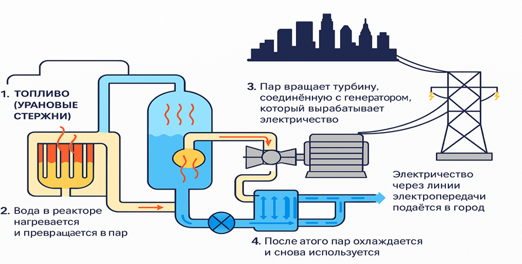
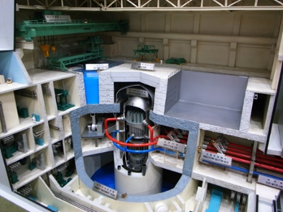

Об Атоме
История об атомной энергии
Атомная отрасль Казахстана имеет долгую и насыщенную историю, начавшуюся ещё в советский период и продолжающуюся по настоящее время. Ниже представлен таймлайн ключевых этапов развития отрасли: от первых урановых месторождений и исследовательских реакторов до запуска современной программы атомной энергетики.
Атомный реактор — это установка, где происходит контролируемая цепная реакция деления урана.

Как он работает:
- Топливо (урановые стержни) делится, выделяя тепло
- Вода в реакторе нагревается и превращается в пар
- Пар вращает турбину, соединённую с генератором, который вырабатывает электричество
- После этого пар охлаждается и снова используется в цикле
- Электричество через линии электропередач подаётся в город
Безопасность реактора обеспечивают многоуровневые системы защиты, такие как двойная герметичная оболочка, комбинация пассивных и активных систем защиты, включая систему охлаждения и аварийную остановку.
Скорость реакции регулируют специальные управляющие стержни — они поглощают избыточные нейтроны.
Принцип работы: атомная энергия превращается в тепло, а затем — в электричество.
Типы реакторов, рассматриваемых для Казахстана
Ниже представлены основные типы реакторов, которые рассматриваются в качестве возможных вариантов для строительства атомной электростанции в Казахстане.
Водо-водяной реактор (ВВЭР-1200, Россия)
Поколение: III+
Разработчик: Росатом (Россия)
Тепловая мощность: 3300 МВт(т)
Электрическая мощность: 1200 МВт(э)
Активная зона: 163 топливных сборок ТВС
Схема: четырехпетлевая
Топливный цикл: 12–18 месяцев (возможность продления)
ВВЭР сочетает активные и пассивные системы безопасности, обеспечивая устойчивую работу даже при потере внешнего электропитания. Конструкция соответствует международным стандартам МАГАТЭ для установок поколения III+.
Введён в эксплуатацию: Россия, Беларусь
Строится: Египет, Бангладеш, Венгрия, Китай

Водо-водяной реактор под давлением (HPR1000, Китай)
Поколение: III+
Разработчик: CNNC (Китай)
Тепловая мощность: 3050 МВт(т)
Электрическая мощность: 1200 МВт(э)
Активная зона: 177 топливных сборок CF3 (UO₂)
Схема: трёхпетлевая
Топливный цикл: 18 месяцев (возможность продления)
HPR1000 сочетает активные и пассивные системы безопасности, обеспечивая устойчивую работу даже при потере внешнего электропитания. Конструкция соответствует международным стандартам МАГАТЭ.
Введён в эксплуатацию:
- Китай — Fuqing-5, Fuqing-6, Fangchenggang-3, Fangchenggang-4, Zhangzhou-1
- Пакистан — Karachi-2, Karachi-3

Малый модульный реактор
- Реакторы мощностью до 300 МВт по определению МАГАТЭ
- Отличаются модульной конструкцией, малой мощностью и высокой безопасностью
- Оснащены пассивными системами безопасности и имеют упрощённую конструкцию
- Первые ММР уже работают: плавучая АЭС «Академик Ломоносов» (Россия) и HTR-PM (Китай, 210 МВт)
- Рассматриваются как перспективное решение для удалённых и арктических регионов
- В настоящее время в разработке находится более 80 концепций ММР

Безопасность современных АЭС: ядерная, радиационная и физическая защита
Современные атомные электростанции представляют собой высокотехнологичные объекты, где безопасность является приоритетным принципом проектирования, строительства и эксплуатации. Сегодня АЭС поколения III и III+ оснащены активными и пассивными системами безопасности, множественными барьерами и системами мониторинга, минимизирующими риски ядерных и радиационных аварий.
Риск аварии не превышает 1:10 миллионов в год. Устойчивость современных проектов может достигать землетрясений до 9 баллов.
Согласно данным МАГАТЭ, риск серьёзных аварий на современных реакторах крайне низок и продолжает снижаться благодаря строгому регулированию и инновациям.
Ядерная безопасность направлена на предотвращение аварий и контроль цепной реакции. Современные реакторы имеют до четырёх барьеров защиты: топливную матрицу, оболочку топлива, герметичный корпус реактора и защитную оболочку. Эти барьеры предотвращают утечку продуктов деления даже при потере электропитания или охлаждения.
Радиационная безопасность направлена на минимизацию доз облучения для работников, населения и окружающей среды. Современные АЭС используют многоуровневый мониторинг: дозиметры в реальном времени, системы радиационного контроля на выходе и автоматизированные барьеры.
Эффективная доза для персонала на АЭС не превышает 20 мЗв в год, а для населения — менее 1 мЗв/год сверх естественного фона.
Глобально, по данным Всемирной ядерной ассоциации, радиационный фон от АЭС сопоставим с естественным фоном от космоса и почвы и ниже, чем от медицинских процедур или полётов на самолётах.
Ядерная физическая безопасность охватывает меры против терроризма, кражи ядерных материалов и несанкционированного доступа к ним. В отличие от ядерной безопасности, которая направлена на предотвращение аварий, физическая безопасность ориентирована на угрозы, связанные с деятельностью человека.
Современные проекты АЭС разрабатываются с учётом внешних воздействий, включая землетрясения, наводнения, потерю электроснабжения и другие экстремальные события. Заявленная устойчивость современных решений может достигать землетрясений до 9 баллов, при этом параметры защиты определяются отдельно для каждой площадки по результатам инженерных изысканий, национальных требований и международных стандартов.
Современные АЭС демонстрируют высокий уровень безопасности благодаря многоуровневым системам, строгому регулированию и непрерывному совершенствованию. Безопасность АЭС — это комбинация национальных норм, технологий, человеческого фактора и международных стандартов, обеспечивающая надёжную защиту без компромиссов для здоровья людей и окружающей среды.
Атомная энергия и экология
Атомная энергия — один из самых экологически чистых источников электроэнергии.
- При выработке 1 кВт⋅ч атомная станция выделяет всего около 12 граммов CO₂, что в десятки раз меньше, чем угольные или газовые станции.
- Одна АЭС мощностью 1000 МВт предотвращает выброс до 4 миллионов тонн CO₂ в год — это эквивалентно удалению с дорог около 1 миллиона автомобилей.
- Такой эффект сопоставим с очисткой воздуха, которую обеспечивают 200 миллионов деревьев, или с сохранением сотен тысяч гектаров леса.
- Развитие атомной энергетики помогает Казахстану сокращать углеродный след и защищать окружающую среду для будущих поколений.
Онлайн-калькулятор выбросов CO₂
Сравните выбросы CO₂ при одинаковом объеме генерации для разных источников энергии.
Расчет является ориентировочным и основан на усредненных коэффициентах выбросов. Фактические значения могут отличаться в зависимости от технологий и условий эксплуатации.
Выбросы CO₂
820 т
Уголь · 1 000 МВт·ч
Пояснение
При выбранном объеме генерации уголь формирует значительно более высокий уровень выбросов CO₂ по сравнению с низкоуглеродными источниками.
Сравнение с атомной энергией
68,3×
Это во столько раз больше, чем у атомной энергии при том же объеме.
Эквивалент автомобилей
≈ 182
Принято из расчета 4.5 тонны CO₂ на 1 автомобиль в год.
Сравнение по источникам
при 1 000 МВт·чМифы и факты об АЭС
Распространённые мифы об атомной энергетике и краткие факты, которые им противостоят.
Миф: Рядом с АЭС жить опасно — она «фонит»
Факт: Доза радиации от станции минимальна и безопасна.
Миф: АЭС может взорваться, как Чернобыль
Факт: Современные реакторы имеют многоуровневую защиту — автоматическое выключение, пассивное охлаждение, герметичный контайнмент. Риск аварии не превышает 1:10 миллионов в год.
Миф: Радиация загрязняет продукты и воздух
Факт: Все выбросы и отходы находятся под строгим контролем, внешняя среда не получает загрязнений.
Миф: Работать на АЭС вредно
Факт: Персонал защищён, уровень облучения значительно ниже международных норм.
Миф: Любая радиация смертельна
Факт: Радиация — естественная часть природы. Малые дозы безопасны для человека.
Миф: АЭС вредят экологии
Факт: Атомные станции не выбрасывают CO₂ и считаются экологически чистым источником энергии.
Миф: АЭС может выйти из строя во время землетрясения и повлечь плохие последствия
Факт: Системы безопасности современных АЭС рассчитаны на землетрясения до 9 баллов и способны остановить реактор без угрозы для окружающей среды.
Проверь свои знания